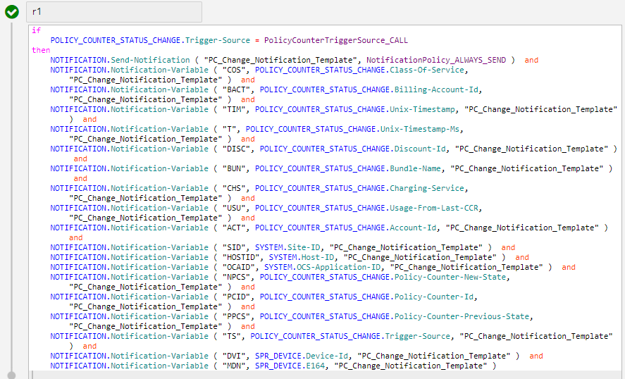
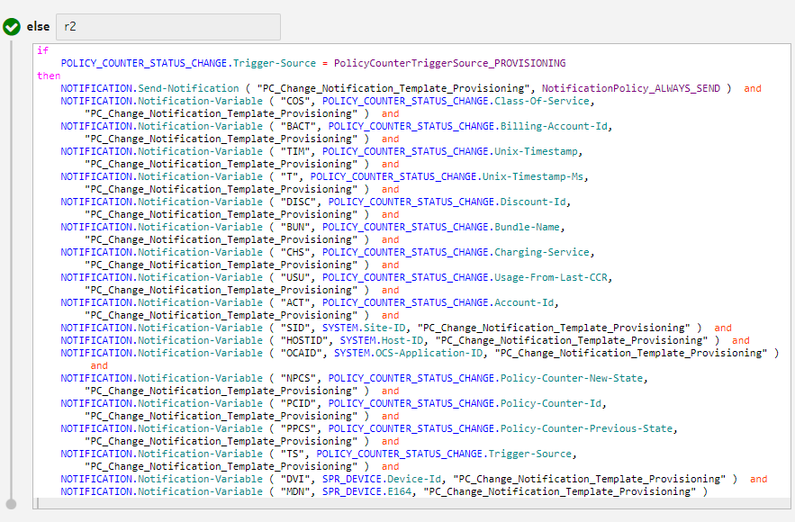
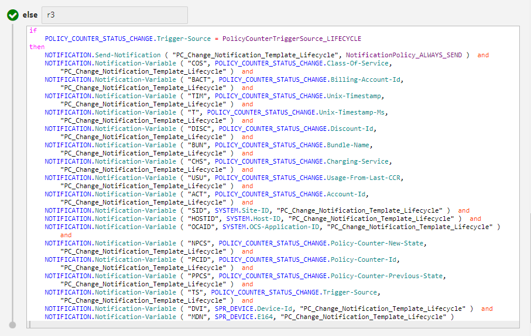

A virtual policy counter (VPC) is a policy counter (PC) that neither exists in NCC nor is attached with a device. VPCs are supported for multiple Sy or N28 interfaces. Following information must be considered for VPCs:
-
The execution of SY.Send-SNR action is defined in the threshold with the OCS Policy Threshold parameter set to True, and attached to a bucket or counter.
-
The VPCs are mapped with buckets, counters, and subscription lifecycles.
-
The VPCs are attached to multiple buckets, counters, and lifecycles.
-
The policy buckets are included in all Sy or N28 messages, similar to that of PCs.
-
An SNR is sent when VPC or PC status is triggered by the provisioning interface.
-
All PCs are included in SNR or SLA message irrespective of the state change.
-
Some specific policy states are specified when a PC or VPC is detached from the device based on the application preference Removed Signalling State Value.
-
The behavior of VPCs is not tested for group configuration and counters.
-
VPCs are not supported for aggregate view and accounts.
-
A bucket is treated as a policy-type bucket when it has a threshold defined, with the OCS Policy Threshold parameter set to True available in threshold.
 Note:
Note:Rule example: THRESHOLD.Threshold-Trigger-Type=ThresholdTriggerType_PROVISION and SY.Send-SNR= "HIGH"
Application preferences
The following application preferences are available for VPCs (see Charging application preferences for definitions).
-
Virtual Policy Counter Support
-
Default Signalling State Value
-
Include All Policy Counters in SNR
-
Aggregate Counter Priority
-
Removed Signalling State Value
Note:VPC support in Send-SNR action for threshold
The Send-SNR action in threshold is defined with pair of parameters, for example, Sy.Send-SNR = “VPC, State”. The first parameter is the VPC name and the second parameter is the Policy state. Although there can be multiple pairs of parameters in the Send-SNR action, only the first pair is considered. For example, if Sy.Send-SNR = “VPC1, State1;VPC2,State2;VPC3,State3” is defined, then only VPC1, State1 is considered.
In the Send-SNR action, the first parameter in a pair is optional. If only one parameter is provided, then it is considered as the state. In this scenario, the Bucket name or Counter name is sent as the policy counter ID (PCID) to the PCRF over Sy/N28 interface.
See the following scenarios.
Scenario 1: Virtual Policy Counter Support flag is ON and Bundle is subscribed:
-
If threshold action is configured on Bucket/Counter as SY.Send-SNR="VPC,High" then in SLA/SNR, policy counter name will be VPC and policy counter state will be High.
-
If threshold action is configured like SY.Send-SNR="High" then in SLA/SNR, policy counter name will be Counter/Bucket Definition name and policy counter state will be High.
Scenario 2: Virtual Policy Counter Support flag is OFF and Bundle is subscribed:
-
If threshold action is configured as SY.Send-SNR="VPC,High" then in SLA/SNR, policy counter name will be Counter Definition name and policy counter state will be VPC,High.
-
If threshold action is configured on counter as SY.Send-SNR="High" then in SLA/SNR, policy counter name will be Counter Definition name and policy counter state will be High.
In this example, as the threshold can be attached to multiple Bucket(s)/Counter(s), VPC1 can be shared by multiple Bucket(s)/Counter(s). When the threshold is executed, the PC name and state provided in the Send-SNR action are sent to the PCRF over Sy/N28 interface in SLA and SNR.
A Bucket/Counter is linked to only one PCID. If multiple PCIDs are configured in different Send-SNR actions in the threshold linked to one Bucket/Counter, then the first occurrence of the PCID is considered as the PCID for that Bucket/Counter.
Sorting logic of VPCs
A sorting logic resolves the conflict wherein multiple VPCs with the same name become eligible to be sent to the PCRF. If multiple resources are updated during a data session through provisioning or lifecycle, then it leads to execution of linked thresholds having Send-SNY with the same VPC name.
The sorting logic is enabled if the application preference Virtual Policy Counter Support is set to BUCKET_COUNTER. Rules to follow at conflict situation is as below
The priority is applicable for both SLR and SNR and for both Sy and N28 interfaces.
-
A PC with an active subscription has higher preference over a PC with barred subscription.
-
If a PC is associated with multiple active subscriptions or all barred subscriptions then:
-
The PC linked to non-exhausted bucket or counter is selected.
-
If all buckets or counters are exhausted, then the PC associated with a bucket or counter having the latest exhaustion time is selected.
Exhaustion of bucket and counter is derived using the following rule:Note:-
When the bucket balance reaches zero, it is considered as exhausted and the time when the exhaustion happens becomes the exhaustion time of the bucket.
-
When a counter reaches a value that triggers the threshold action, the counter is said to be exhausted and the time when exhaustion happens becomes the exhaustion time of the counter.
If the Notification-Reject or Reject action is triggered when a counter reaches the threshold value, then this is considered as a hard-stop scenario for counter.
-
-
If there are multiple non-exhausted buckets or counters OR multiple buckets or counters with the same exhaustion time, then the PC linked with the highest charging service priority is selected. For aggregate counters, priority is based on the application preference Aggregate Counter Priority.
-
If all above factors are same for multiple buckets or counters, then the following logic is followed:
Application preference Value Selection CS Selection Order CREATION TIME The PC linked to the earliest subscription creation time is selected. END TIME The PC linked to earliest subscription expiry time is selected. -
If there is still a conflict, the first PC in the conflict list is picked.
Note:Sending SNR via provisioning commands
If values of Policy Buckets or Counters are updated via provisioning command and the new value changes the Policy state of a resource, then SNR is sent to PCRF as defined in the Send-SNR configuration of threshold. In order to execute threshold over the provisioning interface, the configuration described in the following figure is used.
This also applies when a new subscription is attached to the Device and it has some Policy Bucket(s) and/or Counter(s) defined.
TCP/IP notification parameters
This section defines the configuration for sending a TCP/IP notification when a SNA is received.
The SNA_MANAGEMENT trigger gets evaluated when an SNA is received, and SySession is successfully updated in the database, thereby indicating a change in policy counter status. If SNA is not received, then notification is not triggered for that call. However, in the next call, a notification is triggered if SNA is received. The SNA_MANAGEMENT source context in the SNA_MANAGEMENT trigger is used to send notification parameters. These parameters can be used in TCP/IP notifications sent using NS.
Note:- It is recommended to use this trigger if there is a need to avoid notification of Policy state change (as there is no Policy state change). In such case, it is not recommended to configure notification for Policy state change in individual Bucket/Counter threshold; rather it should be configured in the SNA_MANAGEMENT trigger.
- In NS, custom behavior in Notification Template must be set as DVS.
Application preference
For the notification to be sent, the application preference Virtual Policy Counter Support must be set to BUCKET_COUNTER.
Rule configuration
The following figure presents a sample rule for configuring SNA notifications.
Two rule variables Current-SySession-Index and Total-SySession-Count are available under SNA_MANAGEMNT source context. These are used in rule condition to configure the number of notifications sent in case of multiple Sy sessions. For sample usage of Current-SySession-Index, see Example: Rule configuration for SNA notification.
TCP/IP notification variables and headers
The parameters described in the following table are available in SNA_MANAGEMNT for notification.
| Name | Description | Type | Example |
|---|---|---|---|
| APNRTRCOS | Indicates the name of the charging service. Create a custom data dictionary with ID as Segment and content type as DEVICE. Attach custom data in device with key as Segment. Priority of custom data is higher. | String | COS = SNA_MANAGEMENT.Class-Of-Service |
| MDN | Indicates the MSISDN value or device that triggers the notification. The variable is the E.164 number configured in the device. | String | MDN = SPR_DEVICE.E164 |
| ACT | Indicates the Account ID of subscription (for Bucket)/Account ID associated with first subscription (for Counter). Create a custom data dictionary with ID as BillingAccountID and content type as DEVICE. Attach custom data in device with key as BillingAccountID. Priority of custom data is higher. | String | APNRTRACT = SNA_MANAGEMENT.Billing-Account-Id |
| TIM | Indicates the Unix timestamp when the notification is generated. This is the current time period in seconds. | Long | TIM = SNA_MANAGEMENT.Unix-Timestamp |
| T | Indicates the time when the notification is generated for a Bucket/Counter. It refers to the last three digits or milliseconds of the Unix timestamp. | Long | T = SNA_MANAGEMENT. Unix-Timestamp-Ms |
| CID | Indicates the discount ID. It is the identifier of the Bucket/Counter for which notification is sent. | String | CID = SNA_MANAGEMENT. Discount-Id |
| PPCS | Indicates pre-event Policy Bucket/Counter status. | String | PPCS = SNA_MANAGEMENT.Pre-Policy-Counter-Status |
| NPCS | Indicates post-event Policy Bucket/Counter status. | String | NPCS = SNA_MANAGEMENT.Post-Policy-Counter-Status |
| PCID | Indicates policy counter ID. For non-virtual policy counters, it is same as discount ID. | String | PCID = SNA_MANAGEMENT.Policy-Counter-Id |
- All variables are optional.
|
Name |
Description |
Example |
|---|---|---|
| MASID | This variable indicates the identifier of the physical system, such as system ID. This is the NCC site ID that generates the notification. | MASID = SNA_MANAGEMENT.Site-ID |
| SPAID | This variable indicates the identifier of the application fixed against the NCC node. | SPAID = SNA_MANAGEMENT.Application-ID |
| HOSTID | This variable indicates the identifier of the host. | HOSTID = SNA_MANAGEMENT.Host-ID |
| CLIENTID | This variable indicates the client identifier within the
host.Note: |
CLIENTID = SNA_MANAGEMENT.Application-ID |
- All fields are required.
-
All fields are of string type.
Enabling Policy-Counter-Status-Change notification
When the policy counter status changes during an active Sy session, a notification is sent using the SNA_MANAGEMENT trigger. However, if the Sy session is not present or SNA is not received, then the notification is not sent.
Note:- Policy-counters (device, subscription, group, multi-bundle, and so on)
- Virtual Policy Counters based on counters
- Virtual Policy Counters based on buckets
- Lifecycle Policy Counters
Note:- This feature is not applicable to location-based policy counters and TOD policy counters.
- No notification exchange or trigger execution for SLR/SLA.
For details on the attributes to configure the Policy-Counter-Status-Change notification, see POLICY_COUNTER_STATUS_CHANGE source context
Application preference
-
Set Enable SNR throttling and Keep-Alive to true.
Rule configuration
Note:- If Trigger-Source is CALL:
- If Trigger-Source is PROVISIONING:
- If Trigger-Source is LIFECYCLE:
The parameters described in the following table are available in POLICY_COUNTER_STATUS_CHANGE trigger for notification.
| Name | Description | Type | Example |
|---|---|---|---|
| COS | Indicates the name of the charging service. Create a custom data dictionary with ID as Segment and content type as DEVICE. Attach custom data in device with key as Segment. Priority of custom data is higher. | String | COS = POLICY_COUNTER_STATUS_CHANGE.Class-Of-Service |
| TIM |
Indicates the Unix timestamp when the notification is generated. This is the current time period in seconds. |
Long | TIM = POLICY_COUNTER_STATUS_CHANGE.Unix-Timestamp |
| T |
Indicates the time when the notification is generated for a Bucket/Counter. It refers to the last three digits or milliseconds of the Unix timestamp. |
Long | T = POLICY_COUNTER_STATUS_CHANGE.Unix-Timestamp-Ms |
| DISC | Indicates the bucket or counter definition Id. | String | DISC = POLICY_COUNTER_STATUS_CHANGE.Discount-Id |
| BUN | Indicates the bundle name (without MVNO) corresponding to the subscription that is present in the bucket, or counter. | String | BUN = POLICY_COUNTER_STATUS_CHANGE.Bundle-Name |
| CHS | Indicates the charging service name (without MVNO) that is present in the bucket, or counter. | String | CHS= POLICY_COUNTER_STATUS_CHANGE.Charging-Service |
| USU | Indicates the Used Service Units corresponding to a single
MSCC.Note: |
Big decimal | USU = POLICY_COUNTER_STATUS_CHANGE.Usage-From-Last-CCR |
| BACT | Indicates the Billing Account Id as defined in the CustomData
Dictionary of Device. If BillingAccountID custom data is not present in the device, then this attribute contains the account Id. |
String | BACT = POLICY_COUNTER_STATUS_CHANGE.Billing-Account-Id |
| ACT |
Indicates the Account ID of subscription (for Bucket)/Account ID associated with first subscription (for Counter). Create a custom data dictionary with ID as BillingAccountID and content type as DEVICE. Attach custom data in device with key as BillingAccountID. Priority of custom data is higher. |
String | ACT = POLICY_COUNTER_STATUS_CHANGE.Billing-Account-Id |
| NPCS |
Indicates post-event Policy Bucket/Counter status. |
String | NPCS = POLICY_COUNTER_STATUS_CHANGE.Post-Policy-Counter-Status |
| PCID |
Indicates policy counter ID. For non-virtual policy counters, it is same as discount ID. |
String | PCID = POLICY_COUNTER_STATUS_CHANGE. Policy-Counter-Id |
| PPCS |
Indicates pre-event Policy Bucket/Counter status. |
String | PPCS = POLICY_COUNTER_STATUS_CHANGE. Pre-Policy-Counter-Status |
| MDN |
Indicates the MSISDN value or device that triggers the notification. The variable is the E.164 number configured in the device. |
String | MDN = SPR_DEVICE.E164 |
| DVI | Indicates Id of a device. | String | DVI = SPR_DEVICE.Device-Id |
| TS | It specifies the event which triggers this notification. It has the following possible values:
|
String | TS = POLICY_COUNTER_STATUS_CHANGE.Trigger-Source |
Note:Lifecycle changes for different entities
When VPC is enabled, there are some changes in the Send-SNR event via lifecycle based on entity type.
Device
When lifecycle is configured for a Device, in addition to policy counters, it also looks for Policy Buckets for the Device.
Subscription
When lifecycle is configured for a Subscriptions, in addition to Subscription policy counter, it also looks for PCs/VPCs/Policy Buckets attached to the Device and its other Subscription if the Subscription is of Device type. If Subscription is of group type, it also looks policy counters and policy Buckets for other subscriptions of the Groups.
Account
When lifecycle is configured for an Account, in addition to policy counters related to Accounts, it also matches Policy Buckets/VPCs attached to all subscriptions of Devices and all subscriptions of Groups linked to Accounts.